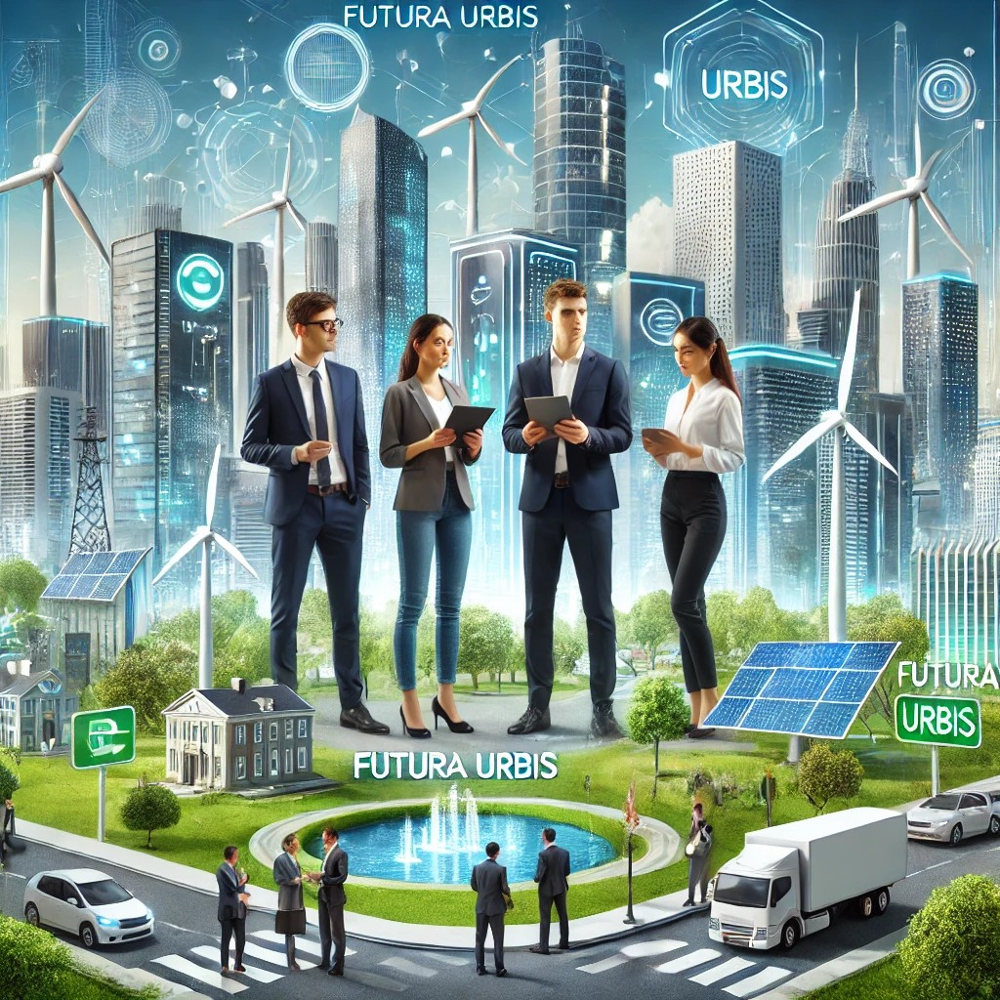

Propuestas electorales
Tecnología e información
Bienvenidos a Futura Urbis, una ciudad en plena transformación gracias a las tecnologías emergentes. Aquí, innovaciones como la inteligencia artificial, las energías renovables y la digitalización están redefiniendo la manera en que vivimos y construimos el futuro. Pero para imaginar cómo estas tecnologías pueden revolucionar Futura Urbis, necesitamos aprender del pasado.

En esta actividad, explorarás cómo tecnologías históricas y emergentes pueden cambiar radicalmente la ciudad. Descubrirás cómo cada avance puede mejorar la sostenibilidad, la eficiencia y la calidad de vida en Futura Urbis. Es tu oportunidad de ser parte del cambio, utilizando el conocimiento del pasado para diseñar un futuro más brillante. ¡Prepárate para investigar, analizar y dar forma al futuro de Futura Urbis!
Impacto de la IA en Nuevas Carreras
Bienvenidos a Futura Urbis, una ciudad donde la tecnología y la innovación se entrelazan para crear un mundo de posibilidades infinitas. Aquí, en el corazón de esta metrópolis avanzada, la inteligencia artificial no solo facilita la vida diaria, sino que también redefine las profesiones y crea nuevas oportunidades laborales.

En su función de concejales, te invitamos a descubrir cómo la inteligencia artificial está transformando sectores y a diseñar tu propio camino en este vibrante mundo del futuro. Prepárate para sumergirte en una experiencia única que te conectará con las oportunidades laborales de Futura Urbis y te permitirá imaginar y construir el futuro que deseas. ¡Tu aventura hacia el futuro comienza ahora!
Soluciones Tecnológicas para Ciudades Sostenibles
¡Bienvenidos, concejales de Futura Urbis!
Como líderes del futuro de nuestra ciudad, ustedes tienen la misión de transformar Futura Urbis en un ejemplo de sostenibilidad y tecnología avanzada. Nuestra ciudad enfrenta desafíos cruciales: el tráfico, la gestión de residuos, la eficiencia energética… Pero también tiene un gran potencial para convertirse en un referente mundial de innovación urbana.

Hoy tienen la oportunidad de diseñar soluciones tecnológicas que no solo mejorarán la vida de nuestros ciudadanos, sino que también protegerán el medio ambiente y promoverán una ciudad más equitativa. Utilizando herramientas como la inteligencia artificial, el Big Data y el Internet de las Cosas, podrán desarrollar sistemas inteligentes que aborden problemas reales. Su tarea será diseñar un sitio web y un plan que presente su visión para Futura Urbis, aprovechando estas tecnologías emergentes.
Las decisiones que tomen no solo tendrán un impacto hoy, sino que definirán el futuro de nuestra ciudad. ¡El cambio comienza ahora, y está en sus manos!
Transformación Digital para una Ciudad Inteligente
¡Saludos, concejales de Futura Urbis!
Hoy, asumen una de las misiones más importantes de su carrera: guiar a nuestra ciudad hacia un futuro brillante y sostenible. En sus manos está la oportunidad de transformar Futura Urbis en una metrópoli inteligente, donde la tecnología y el bienestar de sus ciudadanos se entrelazan de manera armoniosa.

Hoy, tienen la oportunidad de diseñar soluciones tecnológicas que no solo mejorarán la vida de nuestros ciudadanos, sino que también protegerán el medio ambiente, creando un modelo de ciudad que otros querrán seguir. ¡El futuro empieza ahora y está en sus manos!
¡Adelante, concejales, la transformación de Futura Urbis comienza hoy!
El Lenguaje Digital de una Ciudad Inteligente
Bienvenidos a Futura Urbis, la ciudad del futuro donde la tecnología y la innovación gobiernan el día a día! Aquí, cada semáforo, cada cámara de seguridad, y cada contenedor de basura está conectado a un vasto sistema de información digital que mantiene a la ciudad en movimiento y funcionando a la perfección.
Pero, ¿alguna vez te has preguntado cómo es posible que todo esto funcione? ¿Cómo sabe un contenedor de basura que debe vaciarse o cómo puede un semáforo gestionar el tráfico sin generar caos? La respuesta está en el lenguaje digital que impulsa nuestra ciudad: el sistema binario.
Hoy te convertirás en un ingeniero digital de Futura Urbis. Te sumergirás en el corazón de nuestra ciudad inteligente y descubrirás cómo el flujo constante de ceros y unos mantiene todo bajo control. ¡Desbloquearás los secretos de los sensores, cámaras, redes de tráfico, y mucho más! ¿Te atreves a ser parte del futuro y a contribuir a la eficiencia de esta metrópolis?
¡Prepárate para decodificar Futura Urbis y ser el próximo visionario que transforma nuestro futuro digital!